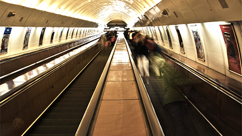

El dia que el "Turc" -un cadell de gos- es va menjar el barret del senyor Sala, la senyora Sala va decidir que allò ja ultrapassava tota mesura canina, que només una paciència de sant podia haver tolerat que les coses arribessin fins allí. Per tant, reunida que fou la família i demanat el parer de cadascú, hom acordà que la noia casada del jardiner es faria càrrec del "Turc" i el tindria a casa seva.
Llegeix-ne més...
Cada dia estava més cansada. Els nens, quan entrava al pis, els trobava moltes vegades adormits. Els havia estès una flassada per terra al menjador, amb dos coixins, i els trobava adormits, de vegades molt acostadets i el nen amb un braç passat damunt de la Rita.
Llegeix-ne més...

En Z havia somiat que, en un lloc inconcret (una mena de vagó de metro o sala d'hospital, enrajolada de blanc, amb seients de vellut verd), entrava una noia que li semblava coneguda. Va dubtar si no era la noia que havia en una estació... La lligava a un paisatge de fum
i viatge. Si hagués sabut com se deia, s'hi hauria atansat. Pero sense recordar-ne el nom (li semblava que mai no s'havien presentat: de cop se li apareixia pobladora d'un paisatge de malentesos), sentia que no podia pas acostar-s'hi.
Llegeix-ne més...
Qui sóc
Categories
Arxiu
Enllaços